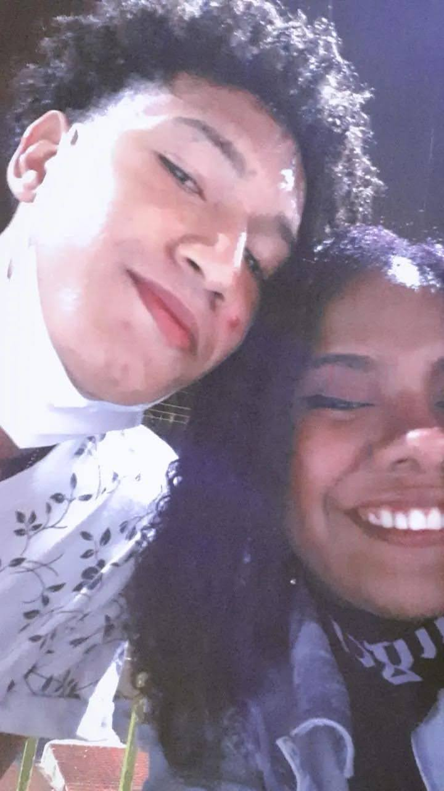
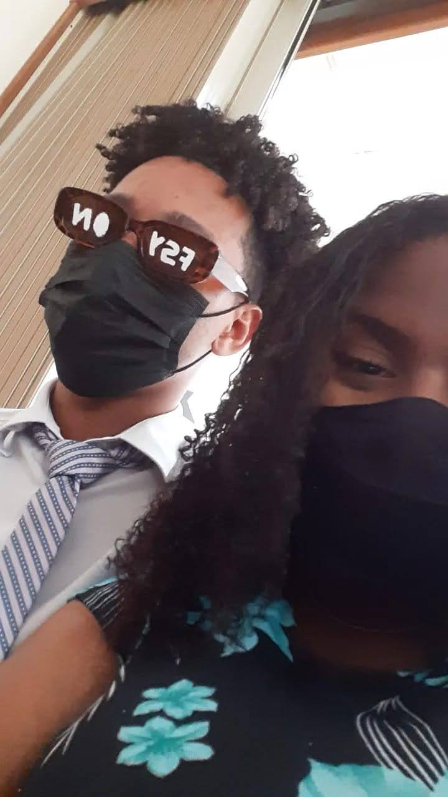
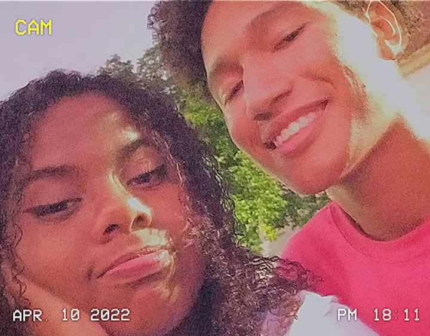

Como tudo começou?
Essa história é boa, e ela sabe bem. Nós sempre nos conhecemos, um ja sabia da existencia do outro, mas depois de uma mensagem em específico, pot causa do meet up, tudo aconteceu. Nós conversamos e ficamos bem amigos.
Acontece que essa amizada foi se desenvolvendo cada vez mais, e durante um dia de dezembro, eu decidi fazer companhia pra essa pobre coitada que só queria assistir o filme do homem aranha e não tinha uma companhia. Nessa noite tudo mudou. Apesar do banho de uma quebra de expectativas no final, eu e ela sabiamos que tinha acontecido algo, que o clima no fim do filme era diferente de como ele era no começo, e depois disso, tudo realmente começou.
foi nesse dia que tudo aconteceu. Dia 10 de janeiro de 2022, eu com essa gigantesca marca de espinha na cara, vc resolveu me dar aquela chance (certeza que se arrepende até hoje). Depois disso, tivemos alguns outros encontros, e foi só questão de tempo até você ser totalmente caidinha por mim e pela minha lábia.
Por fim, no último dia de carnaval do mesmo ano, resolvemos começar o nosso relacionamento sério, esse tal de namoro, e eu simplesmente não me arrependo em nada dessa decisão.
da pra ver como eu sempre fui a maturidade desse relacionamento né?
Os primeiros meses de namoro
Nós eramos só dois adolescentes no ensino médio, como quaisquer outros, então nossa unica responsabilidade era com a escola, e tudo o que a gente mais queria, era que chegasse a quinta ou sexta pra eu sair correndo da escola e pegar o primeiro volta redonda pra te econtrar depois da aula. A gente fazia com primor a ação de vagabundar, se encontrar e ficar atoa mesmo. Curtir na praça, sentar no topo do morro da igreja e assistir o por do sol, tomar um açaí dos trailers.
Mas na verdade, esses são alguns dos momentos que eu mais sinto saudade. Em especial, os dias que eu precisava sair mais cedo e assistir a aula do pré-vestibular e a gente parava em uma lanchonete pra comer um salgado, porque segundo ela, "é muito tempo pra você ficar sem comer nada"

blablabla